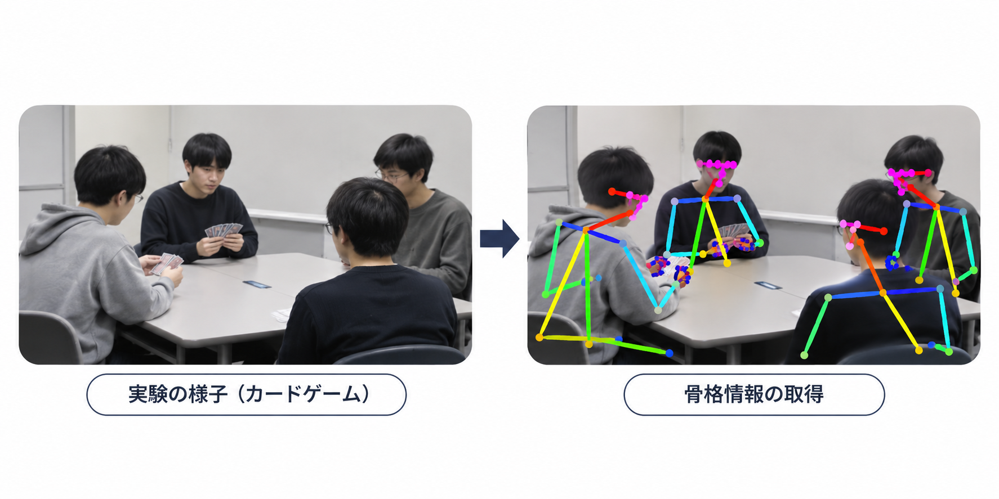

RESEARCH 01
Estimating Internal States Associated with Concealed Emotions from Human Behavior
安藤歩夢
This research aims to estimate whether a person is being deceptive from their natural body movements. We extract skeletal information from video using pose estimation and analyze joint movements and other motion features with deep learning models to improve the accuracy of deception estimation.
Explore research (Japanese)